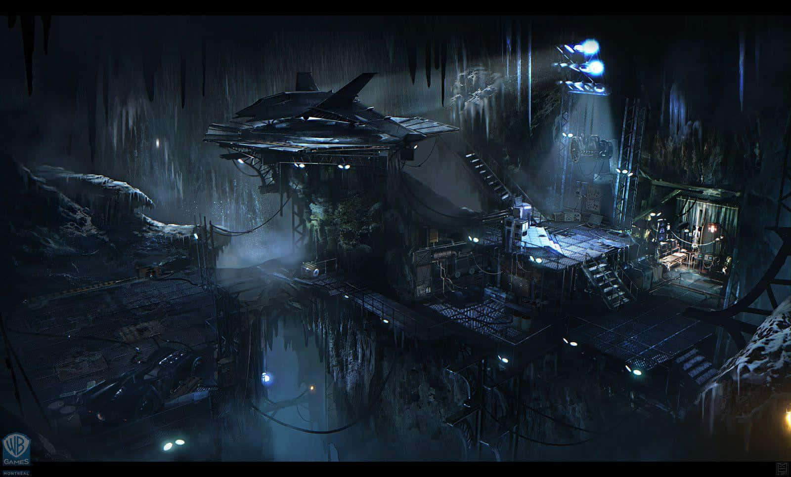
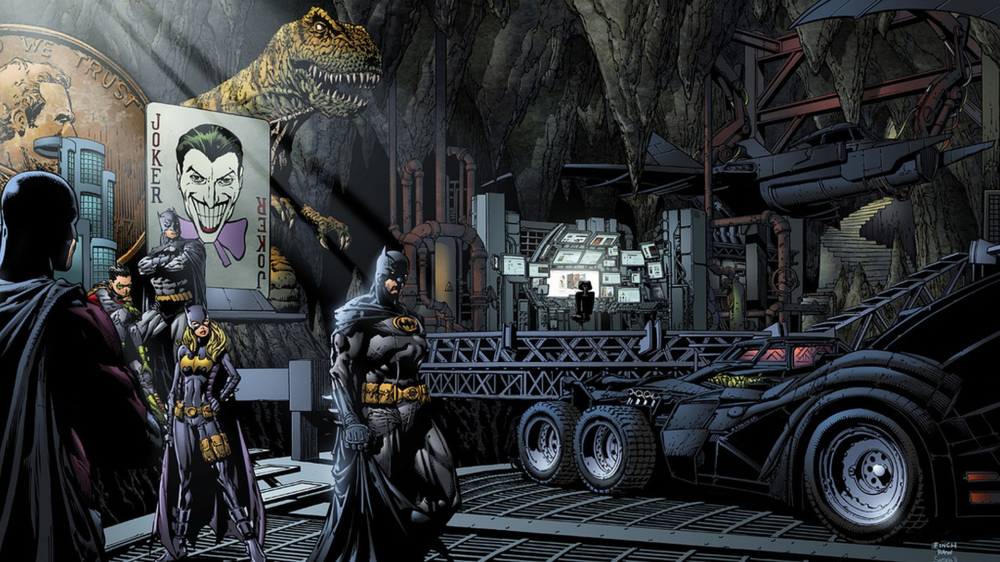
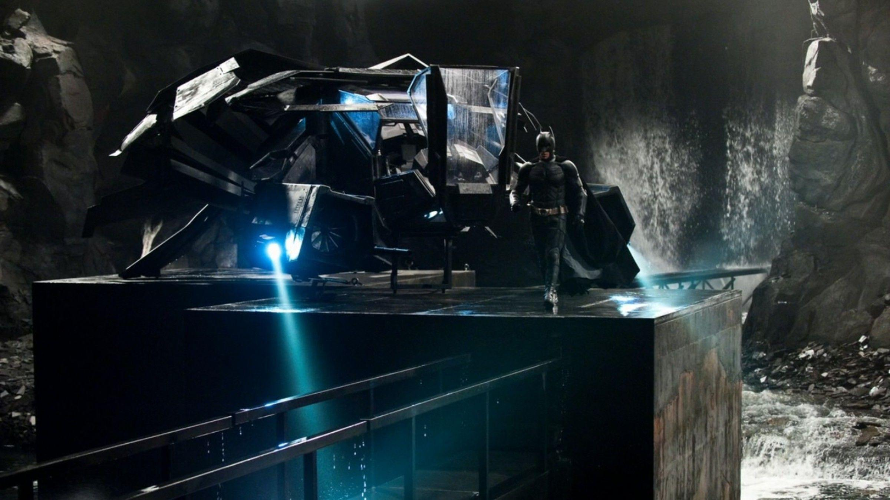
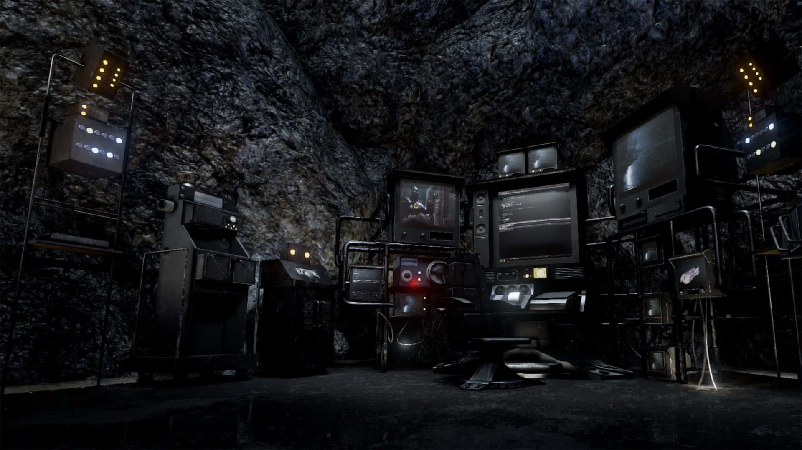
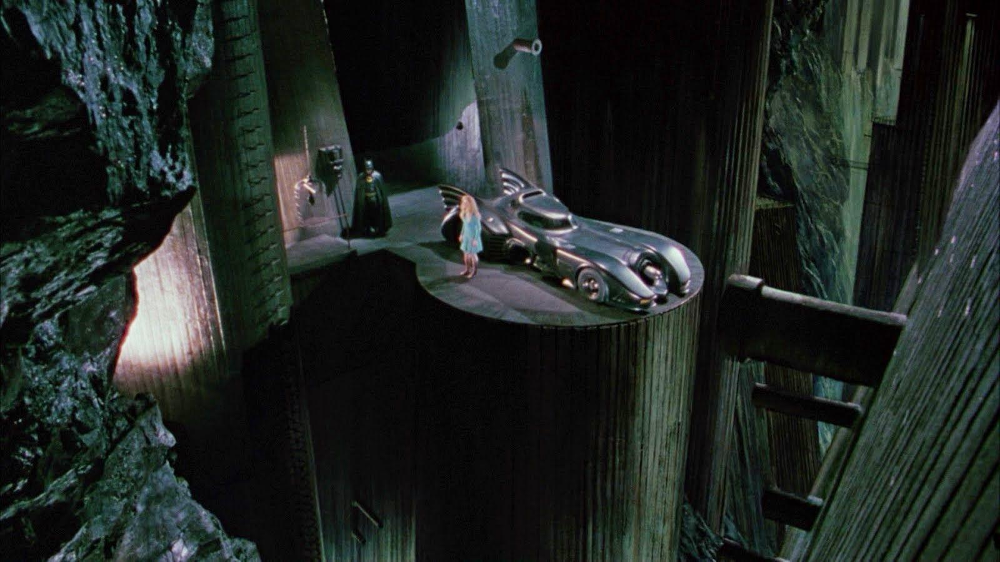
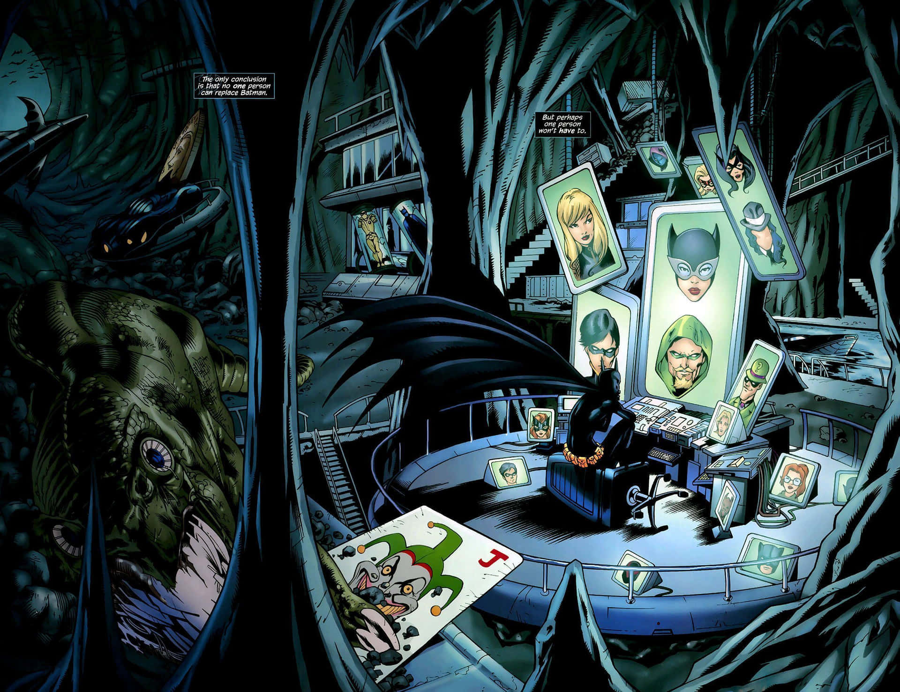

THE BATCAVE







You don't need me to tell you that the Batcave is a pretty cool place. Even apart from being a top-secret superhero base full of the latest tech, vintage Batmobiles and best security known to man, it also houses some of Batman's most iconic "trophies"—bits of paraphernalia he's picked up over the years fighting super-villains that probably wouldn't be safe (or fit) down at the GCPD evidence lockers.
Though the Batcave's layout and design are constantly being updated and revamped, some of the trophies have become major staples of the landscape…but do you know where these classic Bat-Family fixtures actually came from, or why Bruce keeps them around?
Well, if you’ve ever been curious, wonder no more! Here are the secret origins of some of Batman's most prized possessions.
THE T-REX

The giant, animatronic T-Rex is probably one of the most immediately recognizable things in the Cave. How could it not be? It's a massive dinosaur. Of course it's a little bit eye catching.
The real story of the T-Rex actually dates way, way, way back to Batman #35, published in 1946. It featured a story in which an eccentric hunter offered Batman and Robin a massive charitable donation for their appearance at his hunt on the mysterious Dinosaur Island. Unsurprisingly, it turned out to be a trap and Bruce and Dick found themselves fighting for their lives against angry, robotic reptiles. When the dust settled, Bruce took the T-Rex home as a prize of his own.
I mean, wouldn’t you?
Much later, during a stint of amnesia, the T-Rex was donated and turned into a play slide for kids at the Gotham City Community Center, though it eventually was returned to Wayne Manor. After all, a good T-Rex is pretty hard to come by these days. It's best to keep yours someplace safe.
THE GIANT PENNY

Hot on the T-Rex's heels, the giant penny is another iconic, immediately recognizable Batcave fixture. It's shown up in countless comics and even had some featured moments in various animated and live-action series. It might honestly be the most famous penny in the world, truth be told, if anyone kept track of things like that.
The penny's origins date all the way back to 1947 in World's Finest #30 where a villain named Joe Coyne, the Penny Plunderer, perpetrated a whole slew of penny-themed crimes.
Look, it was kind of a lot of money back then. Inflation and what not. You know how these things go.
JASON TODD'S COSTUME

A far more recent (and more tragic) addition to the Cave's trophy store is the display case housing Jason Todd's retired Robin costume. The Batcave has housed plenty of uniforms in its day, but none of them quite hold the same weight of symbolism, making this one a definite display piece.
Strangely enough, the display case actually first appeared in The Dark Knight Returns, but eventually made the leap from that alternate timeline to the main DC Universe, where it became a melancholy symbol for various members of the Bat-Family to visit. Unlike the penny or the dinosaur, the Jason memorial tends to be kept relatively out-of-view in shots of the Batcave, unless of course it is being specifically highlighted for dramatic effect.
THE GIANT JOKER CARD

Another definite eye-catcher, the giant Joker playing card first appeared in Detective Comics #114, back in 1946. The origin of the card shifts around, depending on the incarnation of the Cave and the tone of whatever story is being told, but it's typically used as a not-so-subtle reminder of the Dark Knight's never-ending feud with...well, Joker. Surprise!
More often than not, the card is assumed to have been lifted directly out of one of Joker's hideouts, making it a bit of a power play on Batman's part. Sometimes it can be seen hanging as a display, but other times Bruce puts it to far more utilitarian use and sets it up as a walkway or a bridge between various parts of the Batcave.
THE LETTER FROM THOMAS WAYNE

One of the smaller icons of the Batcave's collection is a very mundane looking letter, kept secure in a display case. It's unsurprisingly pretty easy to miss, and even if you do happen to notice it, chances are you won't immediately recognize what makes it so special.
The truth is, the letter holds a massively sentimental place for Bruce—and a surprisingly cosmic significance for the DCU itself. It's actually from Thomas Wayne, Bruce's father, and was given to him during the events of Flashpoint, which temporarily allowed an alternate reality in which Thomas survived that night in Crime Alley to intersect with the life of the Batman we know.
Look, no one said superhero comics were simple.
Anyway, the letter tends to be given a spotlight in major moments that deal not just with Batman, but the larger fate of the DC Universe at large. In fact, it's been a featured player in more than one very recent Rebirth story.
THE KRYPTONITE RING

This one is both a trophy and a weapon, so you probably won't see it anywhere outside of its lead box unless Bruce intends to use it. The ring itself was actually taken from Lex Luthor, who had it made as a way to face off against Superman.
Obviously, Bruce is concerned that someday that will be the case for him as well, which led to him keeping the ring rather than destroying it…much to Clark's chagrin. The ring has actually come in handy a few times, however, making it one of the most well-used (and arguably, most dangerous) trophies in the Batcave's collection.
Credit - DC Comics